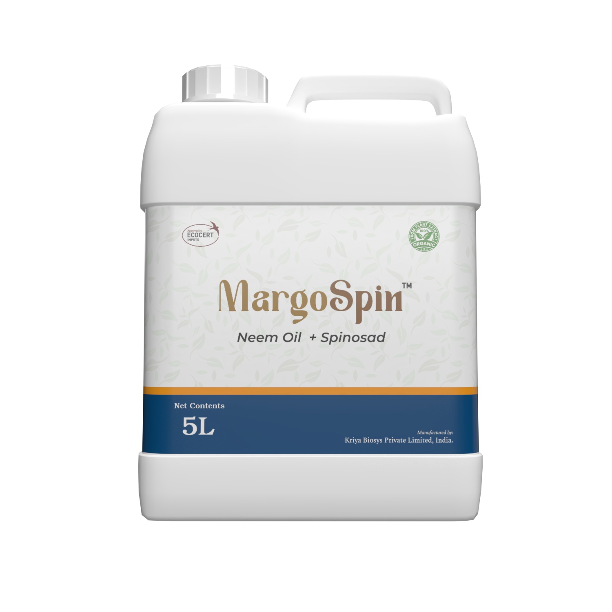

MargoSpin packshot

MargoSpin EC
Neem Oil 70% + Spinosad 1.2% EC
Single-pass solution delivering neem limonoids and spinosyns for resilient pest management.
MargoSpin unites clarified hydrophobic extract of neem oil with premium-grade spinosad to deliver fast knockdown and lasting suppression of hard-to-control pests. Cold filtration preserves limonoids that deter feeding while spinosad provides rapid contact and ingestion activity. Proprietary emulsifiers keep both actives evenly dispersed in high-volume spray rigs and low-volume mist systems. The formulation stays stable across diverse water qualities, maintaining droplet adhesion on waxy foliage. Export-ready traceability documentation and technical dossiers accompany every shipment for seamless onboarding. MargoSpin integrates into organic and residue-managed IPM programs where chemical rotations are limited.
Combines feeding deterrence with neural disruption to manage resistant pest populations.
Oil phase improves leaf wetting while spinosad remains bioavailable throughout the canopy.
Supported by global dossiers, SDS, and residue data for rapid distributor approvals.
A dual-active emulsifiable concentrate that fits premium horticulture and plantation programs.
Neem Oil 70% + Spinosad 1.2% EC
Single-pass solution delivering neem limonoids and spinosyns for resilient pest management.
Neem limonoids disrupt feeding while spinosad delivers contact and ingestion mortality.
Meets leading organic certification requirements and supports residue-reduction programs.
Dual modes extend rotation intervals and reduce pressure on synthetic chemistries.
Delivered with dossiers, SDS, marketing collateral, and lab analytics for onboarding.
| Application Focus | Dosage per Acre | Product per Liter of Water* | Application Interval |
|---|---|---|---|
| Vegetables & field crops | 0.5–1.0 gal (1.9–3.8 L) | 5–10 mL / L | Every 7–10 days |
| Fruit, nut & plantation crops | 1.0–2.0 gal (3.8–7.6 L) | 10–20 mL / L | Every 7–14 days |
| Protected cultivation / greenhouse | 0.25–0.75 gal (0.95–2.8 L) | 2.5–7.5 mL / L | Every 5–7 days |
*Rates align with clarified hydrophobic extract of neem oil label guidance (EPA Reg. No. 96019-4) and maintain equivalent spray concentrations when paired with spinosad.
Kriya supports distributors with regulatory dossiers, formulation expertise, and supply chain assurance for sustained growth.